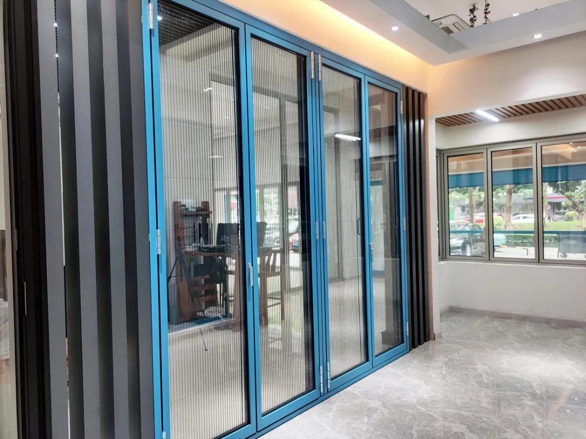
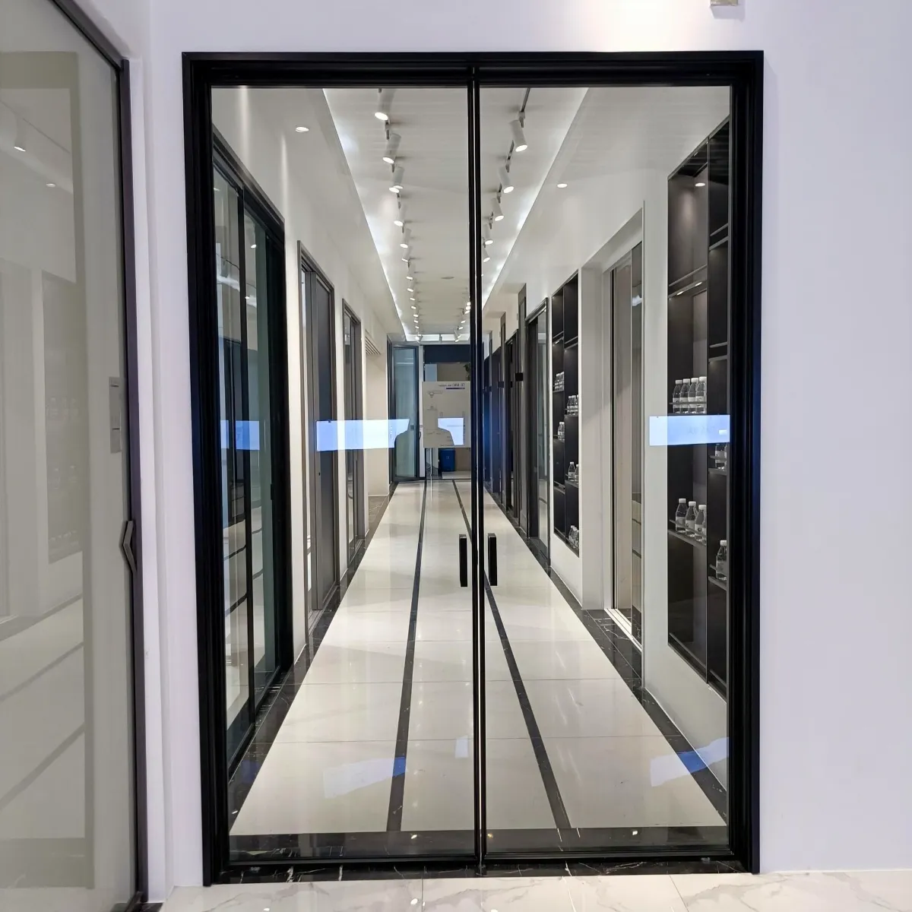

Open up your space completely. Panels fold and stack to one side, giving you 95% clear opening. Perfect for connecting your balcony, patio, or garden with your living space.
The pricing tool on this page is an India-specific fabrication calculator — it checks each bay individually, adds the right profile series, panels, hinges and mortice hardware for your opening, and accounts for fabrication wastage, so the figure is usable for real project budgeting. Built for homeowners, builders, architects, planners and purchase departments, not a generic per-sqft averaging script.
Regular sliding doors only give you 50% opening - one panel always blocks half your space. Folding doors change everything. All panels fold neatly to one side like an accordion, leaving your entire opening free. Imagine stepping from your living room directly onto your balcony with nothing in between.
Half the space always blocked
Almost complete opening
Two distinct systems for different needs. Both built with premium aluminium and toughened safety glass.

PopularMulti-panel doors that fold like an accordion. 50mm & 52mm profiles. Perfect for balconies, patios, living rooms, restaurants. Safety glass & DGU available.

Premium2-panel sliding system with imported ultra-slim profiles. Designed for entrance gates, garden doors, showroom fronts. Fluted glass options for privacy.
Transform your balcony from a separate space into an extension of your living room. Open completely for parties, close for privacy or weather protection.
Bring your garden inside. Wide opening creates seamless flow between indoor living and outdoor greenery. Perfect for morning chai in the garden.
Create open-air dining experience in good weather. Completely close during monsoon or winter. Maximum visibility for attracting customers.
Flexible workspace that adapts. Open for collaborative work, close for private meetings. Glass maintains visual connection while blocking sound.
Make a statement with imported slim profile gates. Elegant glass panels with security mortice lock. Modern alternative to traditional metal gates.
Maximum product visibility with fold-away panels. Create dramatic entrances for customers. Easy to secure at night with full closure.
Instant Quotes - Calculate bi-fold door prices instantly. Enter size, select 50mm/52mm profile, choose glass type, and get real-time estimates.
Instant Quotes - Calculate fold & sliding window prices instantly. Enter size, select glass type (8mm/10mm/fluted), and get real-time estimates for gates and doors.
Peace of Mind - Comprehensive warranty covering profiles, glass, hardware, and installation. Free site visit and consultation included.
1-2 Days - Pre-fabricated components ensure fast, professional installation. Use your doors the same day installation completes.
Book a free site visit. We'll measure your opening, discuss your requirements, and provide an accurate quote - no obligations, no pressure.
Serving Hyderabad, Delhi, Bangalore, Pune, Jaipur & surrounding areas